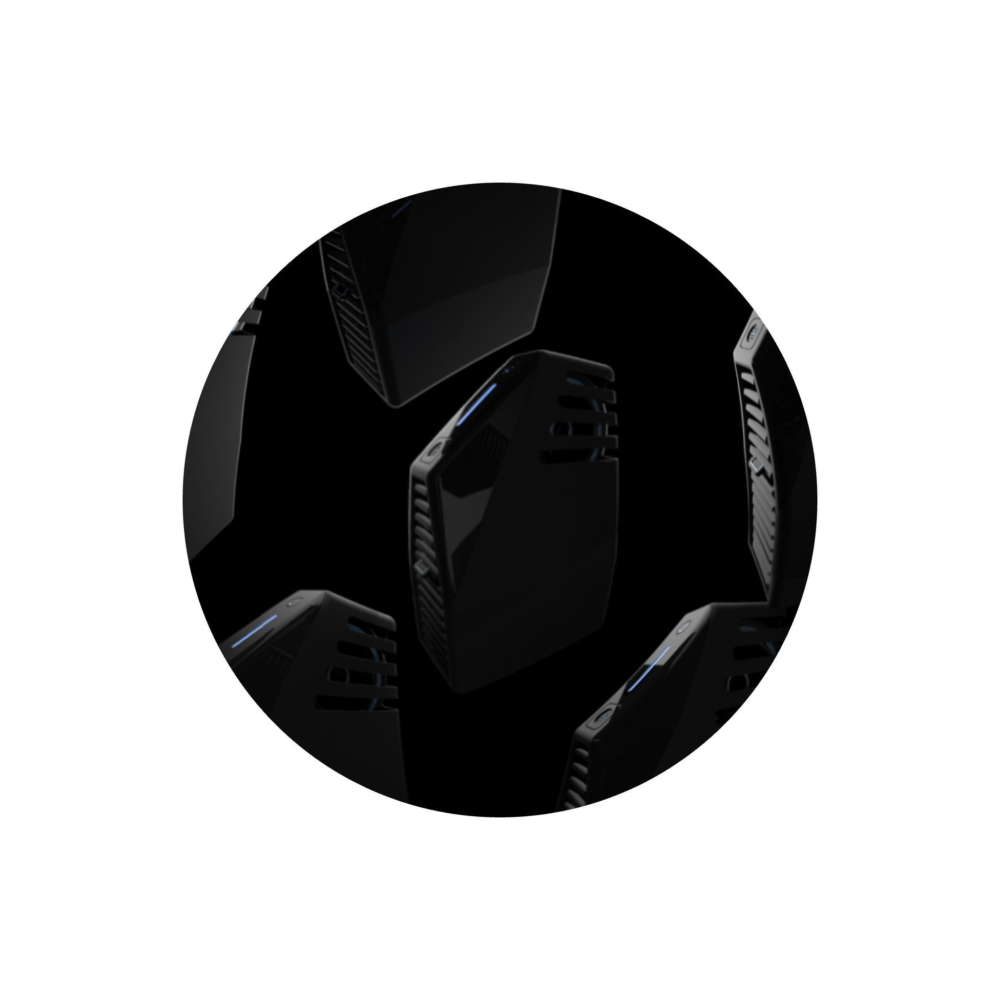

Why Continuous Ray Unprojection Matters
Simulating wide-angle lenses in path-traced software like KeyShot traditionally involves duplicating models 12–20 times in a Thomson-spherical layout. This causes massive memory spikes, geometry faceting, and self-shadowing leaks.
Fisheye Studio solves this by capturing six 90° perspective cube faces once, then reprojecting them via continuous per-pixel ray unprojection. Curved rays are evaluated analytically at the pixel level, giving infinite polygon smoothness with zero faceting.
- Super-Sample Anti-Aliasing (SSAA): $2\times2$ Rotated Grid (RGSS) and $3\times3$ grid subpixel sampling eliminate staircasing on specular edges and fine geometry.
- Catmull-Rom Bicubic Sampling: Sharp texture reconstruction across cube faces prevents the softening of standard hardware bilinear filtering.
- Dual Workflow: Real-time browser editing via WebGL 2 plus a standalone Python engine (
export_highres.py) exporting up to 16,000+ px in 16-bit TIFF/PNG.
Optical Lens Projections
Mathematical models governing how incident ray angles (θ) map to normalized sensor plane radii (r).
Equisolid Angle
Standard photographic fisheye (Nikkor 10.5mm, Sigma 8mm). Preserves relative surface area across the frame, maintaining accurate optical proportions.
Stereographic (Conformal)
Conformal projection popular in action sports and skate filmmaking (Century MK1). Preserves local circular shapes and orthogonal angles without squashed edges.
Equidistant
Linear angular distance mapping. Radius on image is directly proportional to incident ray angle. The standard for planetarium dome masters and robotics.
Orthographic
Planar projection of a hemisphere. Maximizes central resolution while dramatically compressing the perimeter, matching optical aperture ray behavior.
Offline Studio Master Exporter (`export_highres.py`)
For commercial master prints (4K, 8K, 12K, 16K) or 16-bit color-managed production workflows without browser memory constraints:
# 4K Master Render with 2×2 SSAA (8-bit PNG)
python3 export_highres.py "Captures/MOAI.bip cube - nohewccd" --width 3840 --ssaa 2
# 8K Master Render with 16-bit TIFF Output
python3 export_highres.py "Captures/MOAI.bip cube - nohewccd" --width 8192 --ssaa 2 --format tiff --depth 16
# 12K Master Render using saved .fisheye.json edits
python3 export_highres.py "Captures/MOAI.bip cube - nohewccd" --edits "scene.fisheye.json" --width 12000 --ssaa 3